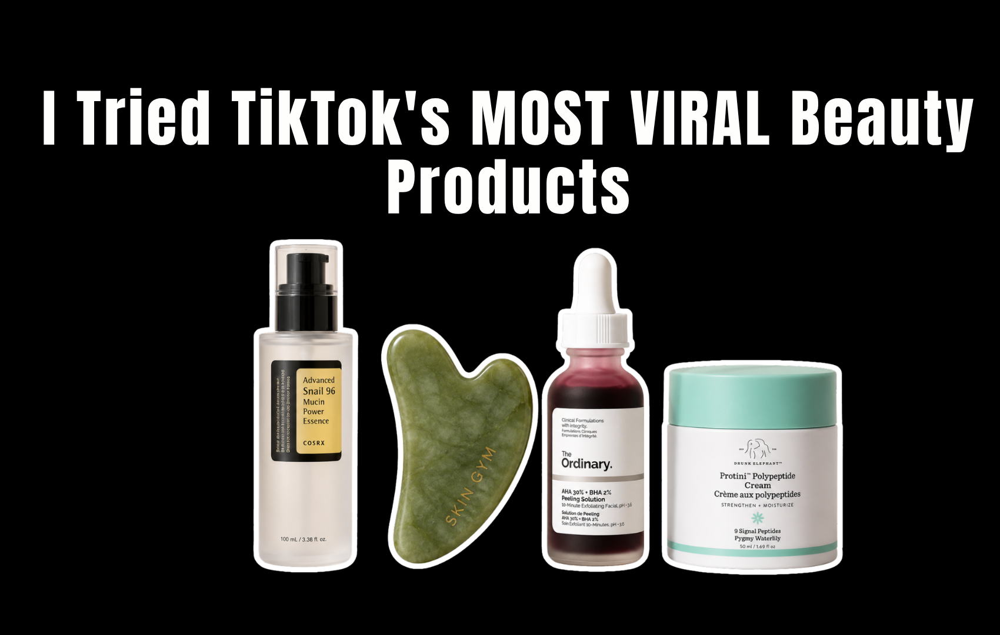

My FYP has been trying to sell me things for years. I've watched the same format play out hundreds of times — someone holds a product up to the camera, says they were skeptical, says it changed their life, drops a link. Most of the time I scroll past. But eventually, when the same four products show up on your feed for three months straight, you start to wonder if everyone is just paid to say this or if something is actually going on.
So I bought them. All four of the products that have been absolutely inescapable on TikTok this year — the COSRX Snail Mucin Essence, the gua sha stone, The Ordinary AHA 30% + BHA 2% Peeling Solution, and the Drunk Elephant Protini Polypeptide Cream. I used each one properly, for long enough to actually form an opinion, and I read every ingredient list before I started.
Here's what I actually think — not the TikTok version.
COSRX Advanced Snail 96 Mucin Power Essence
Verdict: Genuinely Good — But Not MagicI'll be honest: I bought this one with the most skepticism. The TikTok content around snail mucin is absolutely unhinged. People claim it erased their acne scars in two weeks, reversed sun damage, and basically performed minor surgery on their face overnight. The before-and-afters are dramatic. The comment sections are evangelical.
The reality is more boring — and also more interesting — than that. Snail secretion filtrate does contain a mix of glycoproteins, hyaluronic acid, glycolic acid, and zinc, all of which have legitimate skin benefits. It's not pseudoscience. The ingredient has actual research behind it, particularly around wound healing and hydration. What it cannot do is erase deep acne scars, lift hyperpigmentation in two weeks, or replace a retinoid.
After four weeks of using it as a second step after cleansing, my skin felt noticeably more hydrated and the texture smoothed out in a way I wasn't expecting. A few shallow post-acne marks did fade slightly — but I was also using SPF consistently, which does most of that work anyway. The product is genuinely pleasant to use. It layers well, doesn't pill, and doesn't break me out.
What I'd push back on is the scar-fading narrative. The glycolic acid content in snail secretion filtrate is too low to meaningfully resurface skin. If you're buying this specifically to fade scars, you're going to be disappointed. If you're buying it as a hydrating, barrier-supporting essence that happens to have some skin-repairing properties, it's one of the better options at this price point.
The marketing verdict: Partially earned, heavily exaggerated. The product works. The claims on TikTok are about three levels beyond what it can actually do.
Gua Sha (Every Brand, Every Stone)
Verdict: Mostly TheaterI want to be careful here because gua sha as a traditional Chinese medicine practice has a long, legitimate history — and what's being sold on TikTok is not that. What's being sold on TikTok is a rose quartz stone and the promise of a sharper jawline, which is a very different thing.
I used a gua sha stone every morning for six weeks. I watched the tutorials. I used the correct oil underneath. I did the upward strokes, the neck drainage, the under-eye depuffing. And here's what I noticed: my face looked slightly less puffy in the morning, which felt good. That's it. That's the whole result.
The puffiness reduction is real — but it's the same result you'd get from splashing cold water on your face or sleeping on your back. You're moving fluid. You're not sculpting bone. The "lifted jawline" content on TikTok is almost entirely a combination of good lighting, facial expressions, and the temporary effect of increased circulation. No gua sha stone has ever permanently changed anyone's bone structure.
The more expensive the stone, the more egregious the claims tend to get. A $75 "facial sculptor" from a wellness brand is not doing anything a $12 one from a Korean beauty shop isn't. The stone is the stone. The ritual is pleasant. The results are temporary and modest at best.
If you enjoy the morning routine of it, fine — it's not hurting anything. But if you're buying it because you genuinely believe it will give you a more defined face, you've been sold a very pretty piece of marketing.
The marketing verdict: Almost entirely manufactured. The puffiness reduction is real. Everything else is vibes and good camera angles.
The Ordinary AHA 30% + BHA 2% Peeling Solution
Verdict: Effective — And Genuinely Misused by Most PeopleThis is the one that went viral because it looks like blood. The red mask, the dramatic before-and-afters, the "I can't believe this is only $10" energy. I understand the appeal. I also understand why dermatologists have been quietly concerned about it for years.
The formula is real. AHA at 30% is a high concentration — higher than most over-the-counter exfoliants. It works. After using it once a week for a month, my skin texture genuinely improved and some of the dullness I'd been carrying around cleared up. I'm not going to pretend it didn't do anything, because it did.
But the way TikTok uses this product is a problem. The viral content shows people applying it for 20, 30, even 40 minutes — the instructions say 10 minutes maximum. People use it on active breakouts, on compromised skin, on top of other actives. The comment sections are full of people describing chemical burns they're calling "purging." That's not purging. That's damage.
The Ordinary's own instructions are clear. The TikTok content around this product is not. And because the product is $10 and looks dramatic, it gets used carelessly by people who have no idea what AHA concentration means for their skin barrier.
Used correctly — once a week, 10 minutes, followed by SPF — it's one of the most cost-effective exfoliants available. Used the way most TikTok tutorials suggest, it's a fast track to a damaged barrier and reactive skin that takes months to recover.
The marketing verdict: The product is legitimate. The TikTok culture around it is reckless. The brand benefits from the virality and says very little about the misuse.
Drunk Elephant Protini Polypeptide Cream
Verdict: Good Moisturizer. Terrible Value.Drunk Elephant is a masterclass in premium positioning. The packaging is colorful and distinctive. The ingredient philosophy sounds rigorous. The price point signals luxury without being completely inaccessible. And Protini is their most-recommended product — the one that shows up in every "holy grail" TikTok, every "worth the splurge" video, every skincare influencer's morning routine.
I used it for five weeks. My skin felt soft and hydrated. The texture is genuinely lovely — it absorbs well and doesn't feel heavy. I have no complaints about the experience of using it.
What I do have complaints about is the peptide narrative. Drunk Elephant markets Protini heavily on its signal peptides and growth factors, implying a level of skin-firming and anti-aging efficacy that the formula doesn't clearly support. Peptides in skincare are a legitimate area of research — but the evidence for topical peptides producing meaningful, visible firming results is still limited and largely based on industry-funded studies. The concentrations matter enormously, and brands are not required to disclose them.
The honest comparison: CeraVe Moisturizing Cream costs about $18 for 453g. It contains ceramides, hyaluronic acid, and niacinamide — all with strong evidence for barrier repair and hydration. My skin felt essentially the same on both. The Protini felt more luxurious. It did not perform measurably better.
If you have the budget and you enjoy the ritual of it, Protini is a genuinely pleasant product. But the TikTok narrative that it's doing something uniquely transformative that cheaper moisturizers can't — that's the brand talking, not the science.
The marketing verdict: Sophisticated and effective. The product is good. The price premium is almost entirely brand equity, not formula superiority.
So What's Actually Worth It?
Out of the four, the one I kept using after this experiment was the COSRX Snail Mucin. Not because it performed miracles — it didn't — but because it does what it says at a price that makes sense, and the ingredient science is legitimate enough that I trust it. It's now a permanent part of my routine.
The Ordinary Peeling Solution stays in my cabinet too, used correctly and sparingly. It earns its place.
The gua sha stone is in a drawer. The Protini is finished and I went back to CeraVe.
| Product | TikTok Claims | Reality | Worth It? |
|---|---|---|---|
| COSRX Snail Mucin | Erases scars, repairs everything | Solid hydrating essence with real barrier benefits | Yes — at this price, yes |
| Gua Sha | Sculpts jawline, lifts face permanently | Temporary depuffing, no structural change | Only if you enjoy the ritual |
| The Ordinary Peeling Solution | Glow mask, use freely | High-strength exfoliant, requires care | Yes — if used correctly |
| Drunk Elephant Protini | Transforms skin, worth every penny | Good moisturizer, unproven peptide premium | Not at $68 |
The pattern across all four is the same one we see everywhere in beauty: the product exists, the product does something, and then the marketing takes that something and inflates it into a transformation story. TikTok accelerates that inflation because transformation content performs. Nuance doesn't go viral. "It's a decent hydrating essence" doesn't get 4 million views.
That's not a reason to stop buying things you find on TikTok. It's a reason to read the ingredient list before you do.